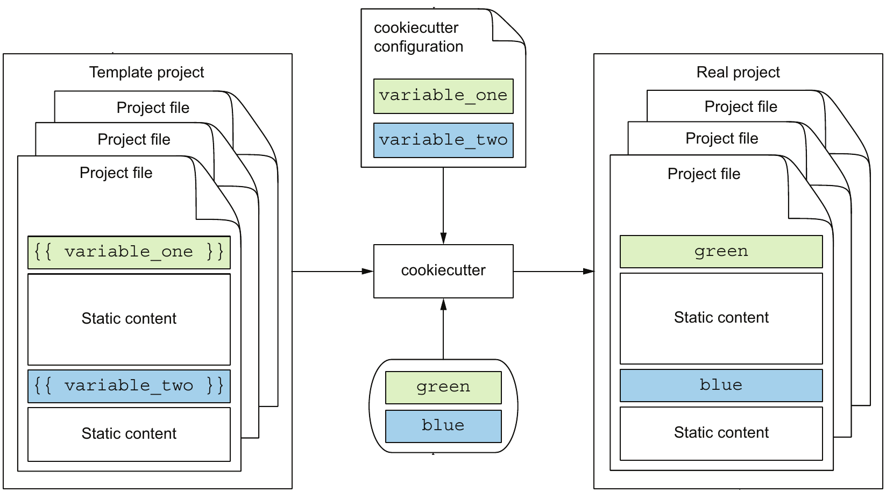
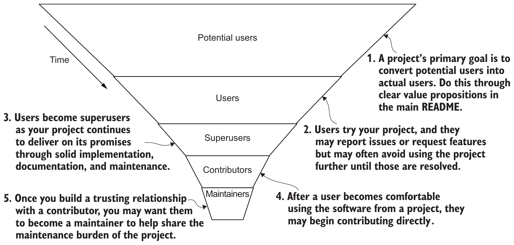

Outline
선행 지식: hello-open-source(4~10주차 예제), 배포 이름·import 이름(3주차), pyproject.toml(3주차), pip install -e·pytest(5주차), 브랜치·PR(2·7주차) → 새로 배울 것: 혼자 쓰던 패키지 만드는 방식을 팀 전체의 같은 방식으로 넓히는 두 가지 일 + 실제 사례 하나
프로젝트 템플릿(줄여 틀) = 새 프로젝트를 찍어 내는 틀 폴더
cookiecutter = 질문에 답하면 틀에서 새 프로젝트를 만드는 도구
사용자 깔때기 = 쓰는 사람(사용자) → 고쳐 보내는 사람(기여자) → 변경을 검토·반영하며 계속 관리하는 사람(유지보수자)으로 사람이 줄어드는 모양
기여 안내 CONTRIBUTING.md = 개발 환경·테스트·변경 보내기 방법 문서
Ingress NGINX = 여러 컴퓨터(서버)의 프로그램 실행을 관리하는 시스템 Kubernetes로 들어오는 웹 접속 요청을 넘겨 주는 프로그램
2026년 3월, 몇 년 동안 유지보수자가 한두 명뿐이던 끝에 개발·수정을 끝낸 일(은퇴)
끝에 완성할 것: 질문 4개에 답하면 새 패키지 폴더를 만드는 팀 표준 틀 python-package-template · 이 틀로 만들고 기여 안내를 더한 선 계산 배포 패키지 geometry-lines · 이 산출물을 쓰는 사람: 새 패키지를 만드는 팀원과 그 패키지를 고쳐 보내는 기여자
새 패키지마다 반복되는 파일
질문: 도형 계산 팀(이 강의의 가상의 팀)이 선 계산 배포 패키지 geometry-lines를 새로 만들 때, hello-open-source(4~10주차 예제)를 통째로 복사해 이름만 고치면 되는가?
복사본에서 옛 이름 두 개(배포 이름 hello-open-source·import 이름 hello_open_source)가 든 곳 = 파일 안 글자를 찾는 명령 grep의 결과 9개 + 폴더 1개
hello-open-source/.github/workflows/ci.yml hello-open-source/docs/conf.py hello-open-source/docs/development.rst hello-open-source/docs/index.rst hello-open-source/docs/quickstart.rst hello-open-source/example.py hello-open-source/pyproject.toml hello-open-source/src/hello_open_source/cli.py hello-open-source/tests/test_greeting.py hello-open-source/src/hello_open_source
손으로 고칠 때 생기는 문제
- 옛 이름 잔존·누락: 10곳 중 한 곳만 빠뜨려도 새 패키지에
hello-open-source가 남음 - 쓰지 않는 코드: 인사말 기능 전용 파일(
cli.py·test_greeting.py·example.py)도 함께 복사됨 - 팀원별 구조 차이: 팀원마다 다른 패키지를 복사해 시작하면 폴더·설정 구성이 사람마다 달라짐
템플릿 폴더의 자리표시자
질문: 틀 폴더에서 새 패키지마다 바뀌는 이름은 어떻게 표시하는가? · 자리표시자(placeholder) {{ cookiecutter.이름 }} = 새 프로젝트를 만들 때 답한 값으로 바뀌는 빈칸 · cookiecutter = 틀과 답을 받아 새 프로젝트 폴더를 만드는 Python 도구(설치 uv tool install cookiecutter, 4주차 방식)
그림 읽기(왼쪽 → 오른쪽): 틀 Template project = 고정 내용 Static content + 자리표시자 {{ variable_one }} → 가운데 설정 cookiecutter configuration의 질문 이름과 입력값 green·blue → 결과 Real project = 같은 색 자리에 입력값, 고정 내용 그대로 · 그림은 줄인 표기, 실제 틀에서는 {{ cookiecutter.variable_one }}처럼 씀

이 강의의 틀 python-package-template/에서 자리표시자가 든 줄(grep 결과 일부, 앞의 틀 폴더 경로 생략)
pyproject.toml:6:name = "{{ cookiecutter.package_distribution_name }}"
pyproject.toml:8:description = "{{ cookiecutter.package_description }}"
README.md:14:import {{ cookiecutter.package_import_name }}
LICENSE:3:Copyright (c) {{ cookiecutter.package_author_name }}{{ }} | 빈칸의 시작·끝 표시 |
cookiecutter. | 받은 답 묶음 |
| 점 뒤의 이름 | 질문 이름(예: package_author_name = 작성자 이름을 묻는 질문) → 그 질문의 답으로 바뀜 · 질문 목록 파일 cookiecutter.json = 4장 |
폴더 이름에도 씀: 틀 안 맨 위 폴더 {{cookiecutter.package_distribution_name}} → 새 프로젝트 폴더 이름도 답으로 바뀜
cookiecutter.json의 질문과 기본값
질문: 자리표시자의 질문 이름과, 답하지 않을 때 쓸 값은 어디에 적는가? · 여기서 질문 = cookiecutter가 실행 중 터미널에서 값을 입력하라고 묻는 것 · 위치: 프로젝트 템플릿(틀) 폴더 맨 위 python-package-template/cookiecutter.json · 형식: JSON(3주차) "키": 값 = 질문 이름: 기본값 · 누가: 팀 표준 담당자가 작성, 새 패키지를 만드는 팀원이 실행 때 터미널에서 답함(5장)
python-package-template/cookiecutter.json 전체
{
"package_distribution_name": "my-python-package",
"package_import_name": "my_python_package",
"package_description": "Tools for my Python package",
"package_author_name": "Your Name"
}| 키 = 질문 이름 | 묻는 것 | 이 답을 쓰는 자리표시자(3장) |
|---|---|---|
package_distribution_name | 배포 이름(pip install에 쓰는 이름) | pyproject.toml의 name, 맨 위 폴더 이름 |
package_import_name | import 이름(하이픈 불가, 3주차) | README.md의 import 줄, src/ 아래 폴더 이름 |
package_description | 한 줄 설명 | pyproject.toml의 description |
package_author_name | 작성자 이름 | LICENSE 저작권자 줄 |
"my-python-package" 등) = 질문할 때 괄호 안에 보여 주는 값 · 답하지 않고 Enter만 누르면 이 값을 씀 · 적힌 순서대로 하나씩 물음(5장)cookiecutter 실행 화면의 질문 응답
질문: 기본 명령 cookiecutter python-package-template은 무엇을 어떤 순서로 묻고, 답은 어떻게 하는가? · 누가·언제: 새 패키지를 시작하는 팀원이 틀 폴더 python-package-template/가 있는 폴더에서 한 번 실행 · 옵션 없이 실행 = 질문마다 답을 기다림
터미널 화면 전체 · 초록 = 사람이 입력한 답(덱의 강조)
$ cookiecutter python-package-template [1/4] package_distribution_name (my-python-package): geometry-lines [2/4] package_import_name (my_python_package): geometry_lines [3/4] package_description (Tools for my Python package): Line calculation tools [4/4] package_author_name (Your Name): Hee
| 화면의 부분 | 뜻 |
|---|---|
[1/4] | 질문 4개 중 첫째 = cookiecutter.json의 첫째 키(4장과 같은 순서) |
키 이름 package_distribution_name | 지금 묻는 질문 이름 |
괄호 (my-python-package) | 기본값 · 아무것도 입력하지 않고 Enter = 이 값 사용 |
| 콜론 뒤 초록 글자 | 입력한 답 + Enter → 다음 질문 |
마지막 답을 입력하면 결과 메시지 없이 끝나고, 지금 폴더에 새 프로젝트 폴더 geometry-lines/가 생김 → 6장에서 내용 확인
생성 결과에서 자리표시자가 값으로 바뀐 곳
질문: 5장의 답 4개는 새 폴더 geometry-lines/의 어느 파일·어느 줄로 들어갔는가? · 확인 명령 grep -rn = 폴더 전체(-r)에서 줄 번호(-n)와 함께 찾기, -e = 찾을 글자(여러 개 가능)
tree -a --noreport geometry-lines 결과(-a 숨김 파일 포함, --noreport 개수 요약 줄 생략)
geometry-lines
├── .gitignore
├── LICENSE
├── README.md
├── pyproject.toml
└── src
└── geometry_lines
└── __init__.py명령 한 번의 출력 9줄 · 한 줄 = 찾은 글자가 든 줄 하나(파일 경로:줄 번호:그 줄 내용) · sort -t: -k1,1 -k2,2n = 콜론으로 나눠 경로 다음 줄 번호 순 정렬
$ grep -rn -e 'geometry' -e 'Line calculation tools' -e 'Hee' geometry-lines | sort -t: -k1,1 -k2,2n
geometry-lines/LICENSE:3:Copyright (c) Hee
geometry-lines/README.md:1:# geometry-lines
geometry-lines/README.md:3:Line calculation tools
geometry-lines/README.md:8:python -m pip install geometry-lines
geometry-lines/README.md:14:import geometry_lines
geometry-lines/pyproject.toml:6:name = "geometry-lines"
geometry-lines/pyproject.toml:8:description = "Line calculation tools"
geometry-lines/pyproject.toml:12:authors = [{ name = "Hee" }]
geometry-lines/src/geometry_lines/__init__.py:1:"""Line calculation tools."""[1/4] geometry-lines | 맨 위 폴더 이름, README.md 1·8번 줄, pyproject.toml 6번 줄 |
[2/4] geometry_lines | 폴더 src/geometry_lines/, README.md 14번 줄 |
[3/4] Line calculation tools | README.md 3번 줄, pyproject.toml 8번 줄, __init__.py 1번 줄 |
[4/4] Hee | LICENSE 3번 줄, pyproject.toml 12번 줄 |
grep -rn '{{' geometry-lines | wc -l → 0, wc -l = 줄 수 세기) · 자리표시자가 없던 줄([build-system], .gitignore 전체 등)은 틀과 똑같음 = 공통 부분 그대로사용자 → 기여자 → 유지보수자 깔때기
① 정리: 틀로 새 패키지를 이름 누락 없이 같은 구조로 찍어 냄(2~6장) → ②의 질문: 만든 패키지를 처음 본 사람이 쓰는 사람, 고쳐 보내는 사람, 함께 관리하는 사람이 되기까지 사람 수는 어떻게 변하는가? · 사용자 깔때기(user funnel) = 이 변화를 위가 넓고 아래가 좁은 깔때기로 그린 모양

그림 읽기: 위 → 아래 = 시간(왼쪽 화살표 Time) · 층 = 사람의 단계 · 아래로 갈수록 좁음 = 다음 층으로 가는 사람이 훨씬 적음(흔히 한 층마다 약 10분의 1) · 오른쪽 번호 1~5 = 층을 넘어가는 계기
| 층(위 → 아래) | 하는 일 |
|---|---|
| 잠재 사용자(Potential users) | 패키지를 알게 되었지만 아직 쓰지 않음 |
| 사용자(Users) | 설치해 씀 |
| 고급 사용자(Superusers) | 자주 깊게 씀, 문제를 먼저 발견함 |
| 기여자(Contributors) | 코드·문서를 고쳐 PR로 보냄 |
| 유지보수자(Maintainers) | PR을 검토·병합하고 릴리스를 맡음 |
CONTRIBUTING.md(8장) · 맨 아래 유지보수자 층이 가장 좁음(9·10장 사례)CONTRIBUTING.md의 세 항목
질문: 버그를 고쳐 보내려는 사람이 개발 환경 준비·테스트 실행·변경 보내기 순서를 묻지 않고 알려면 무엇을 적어 두는가? · 기여 안내 CONTRIBUTING.md = 그 순서를 적은 문서 · 누가·언제: 유지보수자가 저장소 맨 위에 작성 → 기여자가 PR 전에 읽음
틀로 만든 geometry-lines에 더한 CONTRIBUTING.md 전체(빈 줄 생략)
# Contributing to geometry-lines
## Set up for development
```bash
python -m pip install -e .
python -m pip install pytest
```
## Run the tests
```bash
python -m pytest
```
## Send a change
1. Create a branch from `main` and commit your change there.
2. Push the branch to GitHub.
3. Open a pull request into `main` and wait for a review.| 항목(절 제목) | 적은 것과 이유 |
|---|---|
① 개발 환경 Set up for development | 편집 가능한 설치 -e(5주차)와 테스트 도구 pytest 설치 → 고친 코드가 바로 반영되는 환경 |
② 테스트 실행 Run the tests | python -m pytest(5주차) → 보내기 전에 고친 코드가 기존 동작을 깨지 않았는지 확인 |
③ 변경 보내기 Send a change | main에서 브랜치(2주차) → 커밋·push → main으로 PR(7주차) → 검토를 기다림 |
확인: 교수자가 새 가상환경에서 ①·②를 그대로 실행한 결과
1 passed in 0.00s
pytest 마지막 줄(진행 표시 줄 생략) · 테스트 1개(tests/test_lines.py, 작성자가 새로 쓴 부분) 통과 = 안내만으로 개발·확인이 됨
Ingress NGINX 은퇴: 사용자는 많고 유지보수자는 한두 명
8장 정리: CONTRIBUTING.md = 고급 사용자가 기여자로 넘어가는 길 → 질문: 사용자는 아주 많은데 깔때기(7장) 맨 아래 유지보수자 층이 한두 명이면 프로젝트는 어떻게 되는가? · Kubernetes: 여러 서버에 프로그램을 나눠 실행·관리하는 오픈소스 시스템 · Ingress NGINX: Kubernetes 바깥에서 들어오는 웹 요청을 안쪽 프로그램으로 넘겨 주는 오픈소스 프로그램(Kubernetes 프로젝트가 관리) · 근거: Kubernetes 공식 블로그 공지(2025-11-11)·성명(2026-01-29), GitHub 저장소
공지·성명이 꼽은 원인 두 가지
- 유지보수 인원 부족: 사용자가 많아도 함께 고칠 사람이 늘지 않음
- 기술 부채(technical debt: 나중으로 미뤄 쌓인 고칠 일): 한때 편리했던 자유로운 설정 기능이 지금은 심각한 보안 약점 → 성명 "no longer reasonable or even possible to continue maintaining the tool even if resources did materialize"(사람이 생겨도 계속 유지하기 어려움)
CONTRIBUTING.md가 없었는가? 있었다면 깔때기의 어느 층에서 막혔는가? → 10장에서 저장소 파일로 판정깔때기로 다시 본 Ingress NGINX
9장의 질문: CONTRIBUTING.md가 없어서 생긴 일인가? · 확인 방법: 은퇴 뒤 읽기 전용으로 남은 저장소의 최상위 폴더 파일 목록을 GitHub에서 조회(2026-11-05) · 판정 틀: 7장 깔때기의 층
최상위 폴더 목록에서 기여 관련 문서만 고른 것
CONTRIBUTING.md NEW_CONTRIBUTOR.md
CONTRIBUTING.md = 8장과 같은 역할의 기여 안내 · NEW_CONTRIBUTOR.md = 처음 기여하는 사람용 준비 안내
| 넘어가는 층(7장) | Ingress NGINX에서 일어난 일(9장) | CONTRIBUTING.md의 역할 |
|---|---|---|
| 고급 사용자 → 기여자 | 기여 안내 두 문서가 있음 · 사용자 층은 클라우드 네이티브 환경의 약 절반 | 해결하는 일: 개발 준비·테스트·변경 보내기 방법을 알려 PR을 보낼 수 있게 함 |
| 기여자 → 유지보수자 | 몇 년 동안 한두 명 · 2024년 도움 요청 뒤에도 늘지 않음 → 2026년 3월 은퇴 | 못 하는 일: PR을 검토·병합하고 릴리스를 맡을 사람과 그 사람의 시간을 만들지 못함 |
CONTRIBUTING.md만 보고 개발 준비·테스트·PR을 끝낼 수 있는가 ② 유지보수자가 몇 명이고, 혼자라면 도움이 필요한 일을 문서에 밝혔는가(문서 밖에서 따로 정할 일)Summary
개인 프로젝트 → 팀 표준: 틀로 새 패키지를 이름 누락 없이 같은 구조로 찍어 내고 → 고쳐 보내는 방법을 기여 안내로 공개 · 실제 사례로 기여 안내가 해결하는 층과 못 하는 층을 판정
| 대상 | 역할 | 핵심 판정 |
|---|---|---|
| 프로젝트 템플릿(틀) | 공통 부분 + 바뀌는 이름의 빈칸 → 복사·수정의 옛 이름 잔존·누락·팀원별 구조 차이를 없앰 | 패키지마다 바뀌는 이름이 모두 빈칸인가? |
자리표시자 {{ cookiecutter.x }} | 파일 내용·폴더 이름 속 빈칸, 같은 이름 질문의 답으로 바뀜 | 생성 결과에 {{가 남은 줄이 0개인가? |
cookiecutter.json · 실행 화면 | 질문 이름과 기본값 → 적힌 순서대로 묻고, Enter = 기본값 | 답 4개가 어느 파일·줄로 들어갔는지 찾을 수 있는가? |
| 사용자 깔때기 | 사용자 → 기여자 → 유지보수자로 층마다 사람이 줄어듦 | 각 층을 넘는 계기가 무엇이고, 유지보수자가 몇 명인가? |
CONTRIBUTING.md | 개발 환경·테스트 실행·변경 보내기 세 항목 | 처음 온 사람이 묻지 않고 PR까지 보낼 수 있는가? · 해결: 고급 사용자 → 기여자 층 / 못 함: 기여자 → 유지보수자 층(Ingress NGINX: 안내는 있었으나 유지보수자 한두 명 → 프로젝트 은퇴 = 유지보수를 끝내 새 수정이 나오지 않음) |
완성한 것: 질문 4개로 새 패키지 폴더를 만드는 팀 표준 틀 python-package-template + 이 틀로 만들고 CONTRIBUTING.md를 더한 geometry-lines